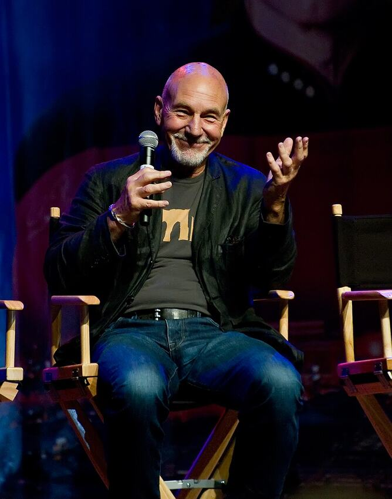

Type the characters in the image to unlock the public key.
Wins 0 · Losses 0 · Pushes 0
Build A–K by suit in the four foundations. Arrange alternating colors in descending order. Click a card, then its destination—or drag cards with a mouse. Double-click a top card to move it home.
Convert between metric, imperial, scientific, and computing units.
Conversions are calculated locally using open-source Math.js.
Graph a function of x, such as sin(x), x^2, or cos(x).
Preparing fractal…
Deep zoom uses expanding BigInt precision. Rendering takes longer as you zoom into finer details; practical limits depend on your device.
1940–2026
Legend. Rest in peace.
